Los algoritmos nunca ven tus variables: ven una matriz de disimilitudes entre pares de objetos. Elegir cómo se calcula esa matriz es la decisión con más consecuencias de todo el análisis, más que la del algoritmo. Este bloque ofrece 39 coeficientes en seis familias, diagnostica la matriz que producen, la dibuja de cuatro maneras y te deja comparar candidatos antes de comprometerte.
El Bloque 3 tiene tres tarjetas: 1 · Choose the coefficient, donde eliges la familia y el coeficiente y lo calculas; 2 · The dissimilarity matrix, con el diagnóstico, la tabla de vecinos y cinco figuras; y 3 · Compare candidate coefficients, para medir cuánto cambia la matriz al cambiar de coeficiente. Arriba, la tarjeta de teoría resume en tres lecciones lo que este capítulo explica con calma. El bloque se activa cuando el Bloque 2 ha construido la matriz de trabajo, y todo lo que sigue (árboles, particiones, validación) se calcula a partir de la matriz que aquí produces.
Tres palabras que se confunden a menudo y que conviene fijar desde ahora, porque la app las usa con precisión.
Dos sitios con veinte especies cada uno pueden ser "parecidos" porque comparten muchas especies, porque tienen abundancias proporcionales o porque a ambos les faltan las mismas cincuenta especies de la región. Cada coeficiente decide cuál de esas cosas cuenta y cuánto. El algoritmo de agrupamiento solo reordena los números que recibe: si la matriz dice que dos sitios están cerca, cualquier método los pondrá juntos. Cambiar de UPGMA a Ward mueve algunos objetos; cambiar de euclidiana a Bray–Curtis puede cambiar de raíz qué significa "grupo". Por eso este bloque va antes que los de agrupamiento y por eso incluye una herramienta para comparar coeficientes.
La primera tarjeta muestra la recomendación que el Bloque 2 dedujo del perfil de los datos, las familias de coeficientes disponibles para tu tabla, el coeficiente elegido con su fórmula y sus parámetros, y el botón de cálculo (figura 4.1).
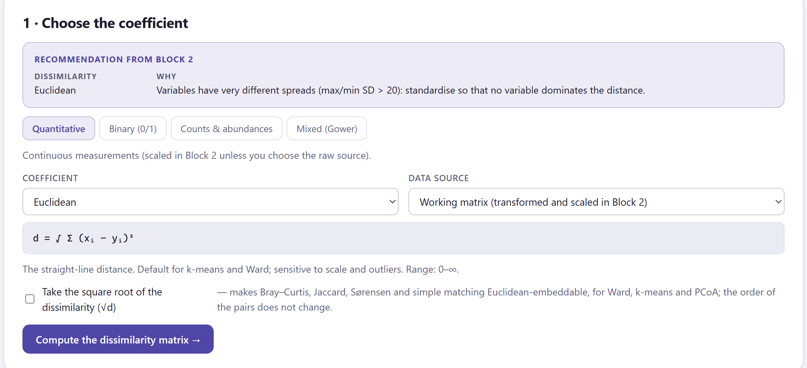
1 2 3 4 5 7 6El catálogo se organiza en seis familias que corresponden a los tipos de dato del Bloque 2. La tabla 4.1 dice qué familia usar y cuál evitar; la tabla 4.2, de dónde toma cada familia sus datos; la tabla 4.3 enumera los coeficientes con su fórmula y su uso. Todas las fórmulas se muestran también en la app al elegir el coeficiente.
| Datos | Usa | Evita |
|---|---|---|
| Cuantitativos con unidades comparables (escalados) | Euclidiana, Manhattan; Mahalanobis si las variables están correlacionadas; euclidiana sobre componentes para quitar ruido | Distancias de correlación con menos de unas 5 variables |
| Perfiles: expresión, espectros, series | 1 − Pearson, 1 − Spearman, coseno | Euclidiana cuando solo importa la forma |
| Presencia/ausencia donde 0 = ausente | Jaccard, Dice, Ochiai, Kulczynski | Apareamiento simple (premia las ausencias compartidas) |
| Binarios con dos estados informativos | Apareamiento simple, Rogers y Tanimoto | Jaccard (ignora uno de los estados) |
| Abundancias, conteos | Bray–Curtis, Ružička, Morisita–Horn; Hellinger o cuerda si necesitas geometría euclidiana | Euclidiana cruda (la dominan las especies abundantes y los dobles ceros) |
| Nominales / ordinales | Apareamiento simple de categorías, rangos para ordinales, Gower | Tratar los códigos de categoría como números |
| Tipos mezclados | Gower (pesos opcionales) | Indicadoras + euclidiana, salvo con pocas categorías |
| Familia (pestaña) | Datos que usa | Aparece cuando… |
|---|---|---|
| Quantitative | Las columnas numéricas de la matriz de trabajo (cuantitativas, conteos y ordinales como rangos; no las binarias ni las indicadoras), o las mismas variables crudas si eliges Raw numeric variables. | hay al menos una variable numérica activa. |
| Binary (0/1) | Las variables binarias activas. Si no hay, las numéricas no negativas codificadas como presencia (x > 0 → 1); la app lo avisa en la nota del resultado. | hay binarias o numéricas no negativas. |
| Nominal / ordinal | Las nominales (por coincidencia de categoría), las binarias declaradas y las ordinales (por rangos). Las cuantitativas se ignoran. | hay al menos una nominal, ordinal o binaria. |
| Counts & abundances | Las variables numéricas no negativas crudas (sin la transformación ni el escalado del Bloque 2): cada coeficiente ecológico aplica su propia estandarización. | hay al menos dos numéricas sin valores negativos. |
| Mixed (Gower) | Todas las variables activas, cada una con la disimilitud de su tipo; o la matriz de trabajo completa para la variante euclidiana. | siempre. |
| Supplied matrix | La matriz de distancias que cargaste, tal cual, con raíz cuadrada o al cuadrado. | la entrada fue una matriz (y entonces es la única pestaña). |
Para dos objetos con p variables binarias se cuentan cuatro cosas: a, variables en que ambos tienen 1; b, en que solo el primero tiene 1; c, en que solo el segundo; y d, en que ambos tienen 0. Todos los coeficientes binarios son combinaciones de a, b, c y d (figura 4.2). La decisión clave es qué hacer con d, las ausencias compartidas: Jaccard, Dice, Ochiai y Kulczynski las ignoran (coeficientes asimétricos), porque que dos sitios carezcan de una especie no dice que se parezcan; apareamiento simple y Rogers y Tanimoto las cuentan como coincidencia (simétricos), lo correcto cuando 0 y 1 son dos estados igual de informativos, como macho/hembra o alelo A/B.
| Coeficiente | Fórmula | Rango | Cuándo usarlo |
|---|---|---|---|
| Quantitative · cuantitativos | |||
| Euclidean | d = √Σ(xᵢ − yᵢ)² | 0–∞ | La línea recta. Predeterminada para k-means y Ward; sensible a la escala y a los atípicos. |
| Squared Euclidean | d = Σ(xᵢ − yᵢ)² | 0–∞ | Lo que Ward y k-means minimizan por dentro; exagera las diferencias grandes. |
| Manhattan (city block) | d = Σ|xᵢ − yᵢ| | 0–∞ | Suma de diferencias absolutas; una sola variable extrema influye menos. |
| Minkowski (order p) | d = (Σ|xᵢ − yᵢ|ᵖ)^(1/p) | 0–∞ | p = 1 Manhattan, p = 2 euclidiana, p grande → Chebyshev. |
| Chebyshev (maximum) | d = máx|xᵢ − yᵢ| | 0–∞ | Solo cuenta la mayor diferencia. |
| Canberra | d = Σ|xᵢ − yᵢ| / (|xᵢ| + |yᵢ|) | 0–p | Diferencias relativas a la magnitud; para datos positivos asimétricos. Los términos con xᵢ = yᵢ = 0 se omiten. |
| Mahalanobis | d = √(x − y)ᵀ S⁻¹(x − y) | 0–∞ | Euclidiana tras quitar las correlaciones entre variables (calculada por componentes principales). |
| Euclidean on principal components | d = √Σₖ(PCₖ(x) − PCₖ(y))² | 0–∞ | Conserva los k primeros componentes: quita ruido y redundancia antes de agrupar. |
| Pearson correlation distance | d = 1 − r(x, y) | 0–2 | Dos objetos se parecen cuando sus perfiles suben y bajan juntos, sea cual sea su nivel. Estándar para expresión génica. |
| Absolute Pearson distance | d = 1 − |r(x, y)| | 0–1 | Los perfiles opuestos también cuentan como parecidos. |
| Spearman correlation distance | d = 1 − ρ(x, y) | 0–2 | Parecido de perfiles por rangos; robusta a atípicos y a transformaciones monótonas. |
| Kendall correlation distance | d = 1 − τ(x, y) | 0–2 | Basada en pares de variables concordantes y discordantes. |
| Cosine distance | d = 1 − x·y / (‖x‖ ‖y‖) | 0–2 | El ángulo entre los perfiles; ignora su longitud. |
| Binary (0/1) · binarios (a, b, c, d de la figura 4.2) | |||
| Jaccard | s = a / (a + b + c) | 0–1 | Asimétrico: las ausencias compartidas no cuentan. El predeterminado para especies y marcadores. |
| Dice / Sørensen | s = 2a / (2a + b + c) | 0–1 | Asimétrico; da doble peso a las presencias compartidas. |
| Simple matching | s = (a + d) / (a + b + c + d) | 0–1 | Simétrico: 0 y 1 igual de informativos (macho/hembra, alelo A/B). |
| Rogers & Tanimoto | s = (a + d) / (a + d + 2(b + c)) | 0–1 | Simétrico, los desacuerdos pesan doble. |
| Sokal & Sneath (asymmetric) | s = a / (a + 2(b + c)) | 0–1 | Asimétrico, los desacuerdos pesan doble. |
| Russell & Rao | s = a / (a + b + c + d) | 0–1 | Presencias compartidas sobre todas las variables; las ausencias restan similitud. |
| Ochiai | s = a / √((a + b)(a + c)) | 0–1 | La similitud coseno para datos binarios. |
| Kulczynski | s = ½ [a/(a + b) + a/(a + c)] | 0–1 | Media de las dos proporciones condicionales de presencias compartidas. |
| Hamming (mismatches) | d = b + c | 0–p | Número de variables en que los dos objetos difieren. |
| Yule | d = (1 − Q)/2, Q = (ad − bc)/(ad + bc) | 0–1 | Basado en asociación; 0.5 significa independencia. |
| Nominal / ordinal · categóricos | |||
| Simple matching (categories) | d = variables con categorías distintas / p | 0–1 | Proporción de categorías que no coinciden, sobre las nominales (y binarias). |
| Manhattan on normalised ranks | d = Σ|rango(xᵢ) − rango(yᵢ)| / (kᵢ − 1) / p | 0–1 | Ordinales comparadas por rango, cada variable llevada a 0–1. |
| Gower (categorical + ordinal) | d = media de la disimilitud 0–1 de cada tipo | 0–1 | Apareamiento simple para nominales, diferencia de rangos para ordinales, estilo Jaccard para binarias. |
| Counts & abundances · ecológicos (X, Y = totales de cada objeto) | |||
| Bray–Curtis | d = Σ|xᵢ − yᵢ| / Σ(xᵢ + yᵢ) | 0–1 | El caballo de batalla de las tablas de comunidades; ignora dobles ceros; 1 = ninguna especie en común. No euclidiana (usa √d para Ward). |
| Ružička (quantitative Jaccard) | d = 1 − Σmín(xᵢ, yᵢ) / Σmáx(xᵢ, yᵢ) | 0–1 | Jaccard generalizado a abundancias. |
| Kulczynski (quantitative) | d = 1 − ½ [Σmín/X + Σmín/Y] | 0–1 | Menos sensible a diferencias de abundancia total que Bray–Curtis. |
| Morisita–Horn | d = 1 − 2Σxᵢyᵢ / [(Σxᵢ²/X² + Σyᵢ²/Y²) X Y] | 0–1 | Casi independiente del tamaño de muestra; enfatiza las especies dominantes. |
| Hellinger distance | d = √Σ(√(xᵢ/X) − √(yᵢ/Y))² | 0–√2 | Euclidiana entre raíces de abundancias relativas; apta para Ward, k-means y ACP. |
| Chord distance | d = √Σ(xᵢ/‖x‖ − yᵢ/‖y‖)² | 0–√2 | Euclidiana entre perfiles llevados a longitud unitaria. |
| Chi-square distance | d = √(Σ₊₊) · √Σⱼ(1/cⱼ)(xⱼ/X − yⱼ/Y)² | 0–∞ | La distancia del análisis de correspondencias; las especies raras pesan más. |
| Canberra (abundances) | d = Σ|xᵢ − yᵢ| / (xᵢ + yᵢ), sobre especies presentes en al menos uno | 0–p | Cada especie pesa lo mismo, sea cual sea su abundancia. |
| Jaccard on presence/absence | s = a / (a + b + c) tras codificar x > 0 como 1 | 0–1 | Descarta las abundancias y conserva solo la composición. |
| Mixed (Gower) · tipos mezclados | |||
| Gower | d = Σₖwₖdₖ / Σₖwₖ; dₖ = |x − y|/rango (cuantitativas, rangos ordinales), desacuerdo (nominales), estilo Jaccard (binarias) | 0–1 | Cada variable aporta 0–1; las cuantitativas se escalan por rango internamente, así que el escalado del Bloque 2 no influye aquí. |
| Euclidean on the working matrix | d = √Σ(xᵢ − yᵢ)² sobre columnas escaladas e indicadoras | 0–∞ | La alternativa rápida: las categorías se vuelven columnas 0/1 con peso 1/√2. Menos fundamentada que Gower. |
| Supplied matrix · matriz cargada | |||
| As supplied | d = D | — | Tu matriz, sin cambios. |
| Square root | d = √D | 0–√máx | Vuelve euclidianas muchas disimilitudes que no lo son (Bray–Curtis, Jaccard), lo que Ward y el PCoA agradecen. |
| Squared | d = D² | 0–máx² | Cuando tu matriz trae distancias con raíz y necesitas la escala original. |
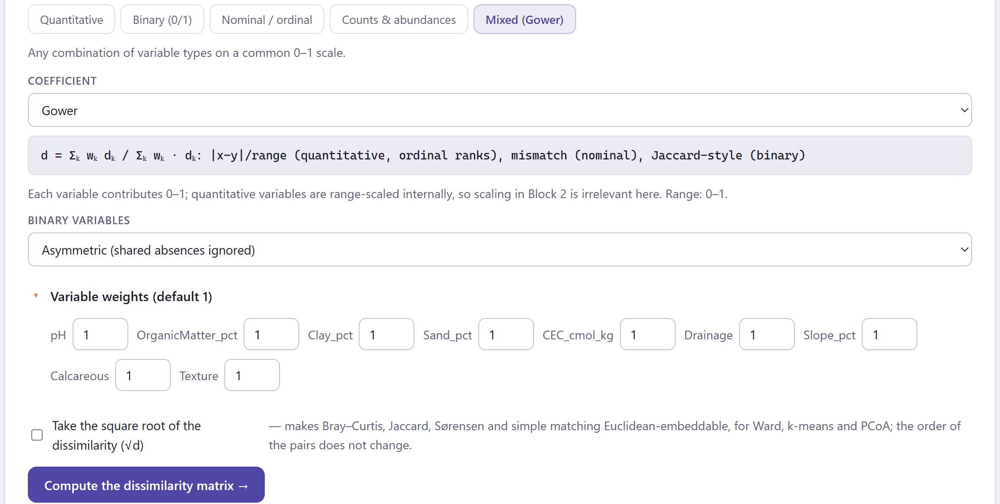
Un peso 2 en una variable la hace contar como dos; un peso 0 la saca del cálculo sin cambiar su papel en el Bloque 2. Es la forma limpia de dar más importancia a una medida decisiva (por ejemplo, la textura en perfiles de suelo) o de probar cuánto cambia la matriz sin una variable dudosa. Si usas pesos, repórtalos en los métodos: el párrafo automático del Bloque 8 los incluye.
No todas las disimilitudes se comportan como las distancias del mapa. Dos propiedades deciden qué métodos puedes aplicar sin distorsión, y la app las comprueba en cada matriz.
Una disimilitud es métrica cuando cumple la desigualdad del triángulo: para tres objetos cualesquiera, d(x, z) ≤ d(x, y) + d(y, z). Es lo que esperas de una distancia real: ir de x a z pasando por y no puede ser más corto que ir directo. Es euclidiana (más exactamente, euclidianamente embebible) cuando los objetos pueden colocarse como puntos en algún espacio euclidiano de modo que las distancias entre puntos reproduzcan exactamente todas las d. Toda disimilitud euclidiana es métrica; lo contrario no siempre.
Importa porque Ward, k-means sobre coordenadas y el análisis de coordenadas principales (PCoA, el mapa de este bloque) suponen geometría euclidiana. Sobre una matriz no euclidiana siguen funcionando, pero distorsionan: los porcentajes del PCoA dejan de sumar bien, aparecen autovalores negativos y Ward puede unir grupos en un orden extraño. El remedio habitual es tomar la raíz cuadrada de la disimilitud: √d es euclidiana para Bray–Curtis, Jaccard, Sørensen y apareamiento simple. En cambio, los enlaces simple, completo y promedio y PAM solo necesitan la matriz: cualquier disimilitud, métrica o no, les sirve.
La app comprueba las dos propiedades al calcular la matriz:
| Si la matriz… | entonces |
|---|---|
| es euclidiana (masa negativa < 1 %) | Todo vale: Ward, k-means sobre los ejes del PCoA, porcentajes del PCoA. |
| es casi euclidiana (1–10 %) | Ward y el PCoA son aceptables; los porcentajes son aproximados. |
| no es euclidiana (≥ 10 %) | Prefiere UPGMA, enlace completo o PAM. Si quieres Ward o k-means, marca Take the square root of the dissimilarity (√d) en la tarjeta 1 y vuelve a calcular (con una matriz cargada, elige Square root en la pestaña Supplied matrix). |
| no es métrica (viola el triángulo) | Los jerárquicos funcionan (los enlaces de centroide y mediana pueden mostrar inversiones); k-means necesita coordenadas: usa PAM o un PCoA. |
Al pulsar Compute the dissimilarity matrix → aparece la segunda tarjeta (figura 4.4): siete casillas de cifras, una lista de comprobaciones interpretadas, la tabla de los tres vecinos más cercanos de cada objeto y las figuras de la sección 4.6.
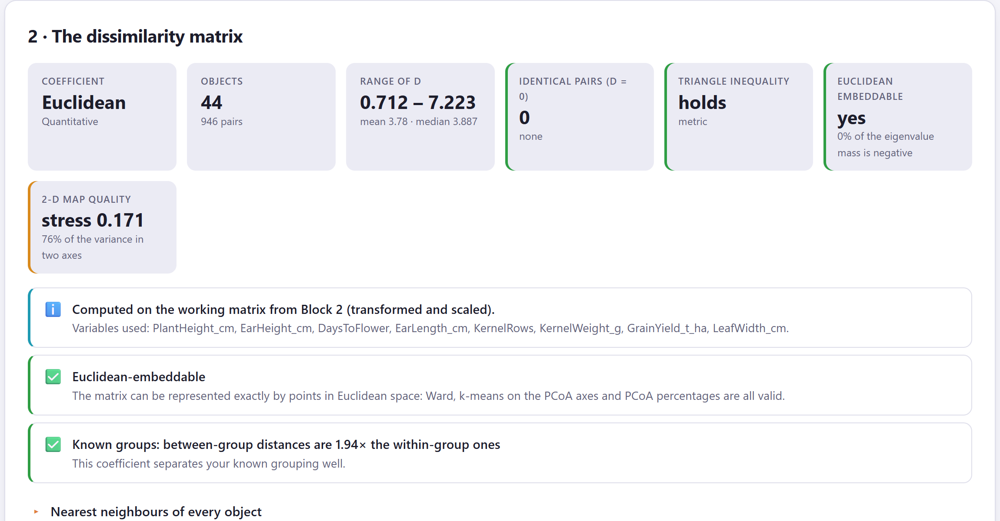
1 2 3| Casilla | Qué es | Semáforo |
|---|---|---|
| Coefficient | El coeficiente y su parámetro (orden p, componentes conservados, tipo de binarias en Gower). | — |
| Objects | Objetos y número de pares, n(n − 1)/2. | — |
| Range of d | Mínimo, máximo, media y mediana de las disimilitudes. | — |
| Identical pairs (d = 0) | Pares de objetos a distancia cero: duplicados o empates. | ámbar si pasan del 5 % de los objetos |
| Triangle inequality | holds (métrica) o el porcentaje de ternas que la violan. | verde si se cumple, ámbar si no |
| Euclidean embeddable | yes, nearly o no, con el porcentaje de masa negativa. | verde < 1 % · ámbar 1–10 % · rojo ≥ 10 % |
| 2-D map quality | El estrés del mapa PCoA y la varianza que reúnen sus dos ejes. | verde < 0.1 · ámbar 0.1–0.2 · rojo ≥ 0.2 |
| Comprobación | Nivel | Qué sugiere |
|---|---|---|
| Computed on… / Variables used | ℹ️ | De qué datos salió la matriz (matriz de trabajo, variables crudas, binarias, conteos, la matriz cargada) y qué variables entraron. Revísalo: es fácil calcular un coeficiente ecológico sobre variables que no son conteos. |
| N pairs of objects at distance 0 | ℹ️ ⚠️ | Nombra los pares idénticos. Se unirán siempre primero; con muchos empates el orden del dendrograma se vuelve arbitrario. |
| The coefficient is not a metric | ⚠️ | Porcentaje de ternas que violan el triángulo y qué métodos evitar (regla de la sección 4.3). |
| Euclidean-embeddable / Nearly Euclidean / Not Euclidean-embeddable | ✅ ℹ️ ⚠️ | Según la masa negativa; el aviso rojo sugiere la raíz cuadrada. |
| The 2-D map is a poor summary | ⚠️ | Estrés ≥ 0.2: los pares lejanos están mal colocados en el plano. Juzga la similitud por el mapa de calor y el árbol, no por el mapa. |
| Wide spread of dissimilarities | ℹ️ | Coeficiente de variación de las disimilitudes > 0.45: unos pares están mucho más cerca que otros, buena señal. Busca dos jorobas en la figura de distribución. |
| All pairs are about equally dissimilar | ⚠️ | Coeficiente de variación < 0.15: los objetos están repartidos de forma pareja, lo que ocurre con muchas dimensiones o sin estructura. Los grupos serán frágiles. |
| Known groups: between-group distances are N× the within-group ones | ✅ ℹ️ ⚠️ | Cociente entre la disimilitud media entre grupos conocidos y dentro de ellos: > 1.5 el coeficiente separa bien la agrupación; 1.1–1.5, modestamente; menos, apenas la distingue: prueba otro en la comparación. |
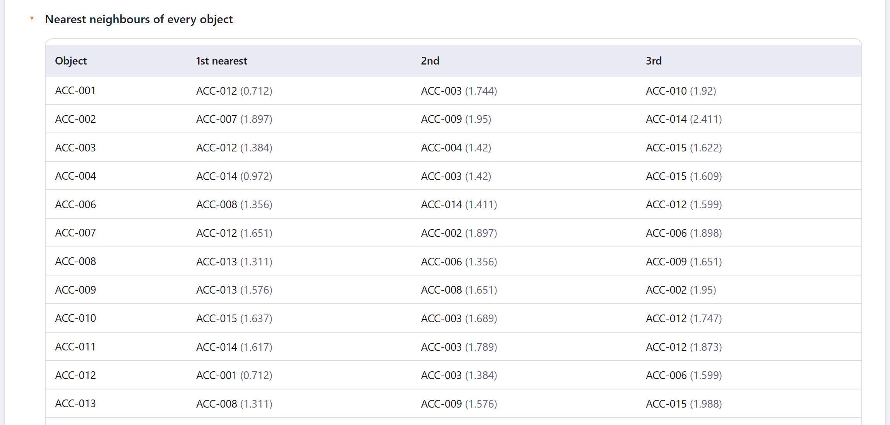
¿Cuánto importa la elección para tus datos? La tercera tarjeta responde con números: marca varios coeficientes, la app recalcula cada matriz y correlaciona sus disimilitudes por pares. Si todas las matrices dicen lo mismo, la elección es inofensiva; si no, tus grupos dependen de ella y debes decirlo en el artículo.
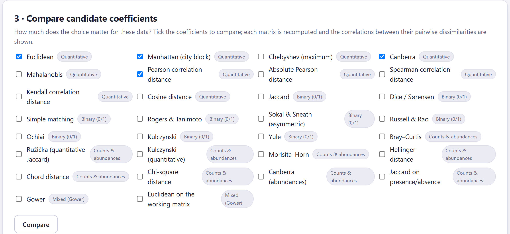
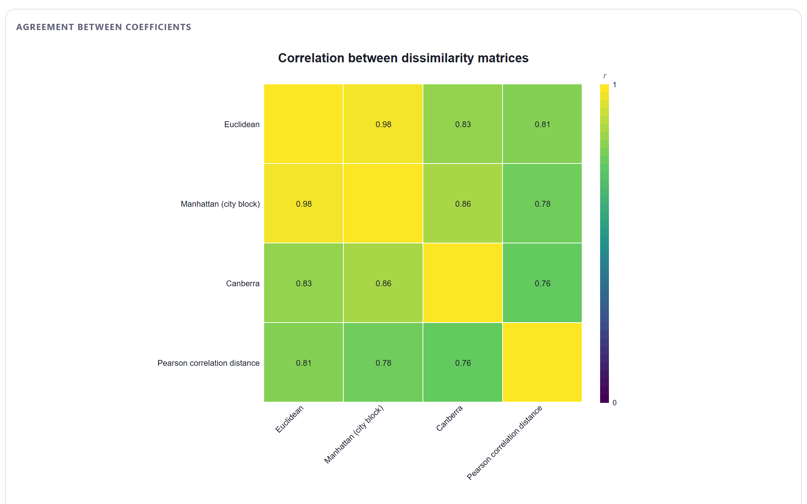
| Correlación mínima | Frase de la app y consecuencia |
|---|---|
| > 0.90 | All the coefficients agree closely: la elección importa poco; los grupos deberían ser estables entre coeficientes. |
| 0.70–0.90 | The coefficients agree moderately: espera que algunos objetos cambien de grupo según el coeficiente; elige por razones teóricas (tipo de dato, dobles ceros, escala) y comprueba la estabilidad en el Bloque 6. |
| < 0.70 | The coefficients disagree substantially: tus grupos dependen de esta decisión. Prefiere el coeficiente que corresponde al tipo de dato y a la pregunta, y reporta la comparación. |
Además del párrafo y la figura, la tabla Pearson correlation between the pairwise dissimilarities of each coefficient repite las correlaciones y, si hay agrupación conocida, añade la columna Between / within (known groups): el cociente entre distancias entre grupos y dentro de grupos con cada coeficiente. El párrafo nombra el que da el cociente mayor. Es una pista, no un veredicto: un cociente alto dice que ese coeficiente separa tus grupos conocidos, que no siempre son los grupos que quieres descubrir.
La comparación mide acuerdo, no acierto. Cuatro coeficientes pueden coincidir en un resultado inadecuado si todos ignoran lo que importa (por ejemplo, cuatro coeficientes euclidianos sobre abundancias sin transformar). Elige primero por la naturaleza de los datos (tabla 4.1) y usa la comparación para saber cuánta cautela poner al interpretar y qué reportar. Y recuerda que la comparación se hace con los parámetros actuales (fuente de datos, p, pesos de Gower).
El bloque produce cinco figuras de la matriz y una sexta de la comparación, todas editables y exportables como las del Bloque 2 (tabla 4.7). Las cuatro primeras se leen juntas: el mapa de calor muestra la matriz entera, el PCoA la resume en un plano, el diagrama de Shepard dice cuánto se puede confiar en ese plano y la distribución dice si hay pares cercanos y lejanos claramente separados.
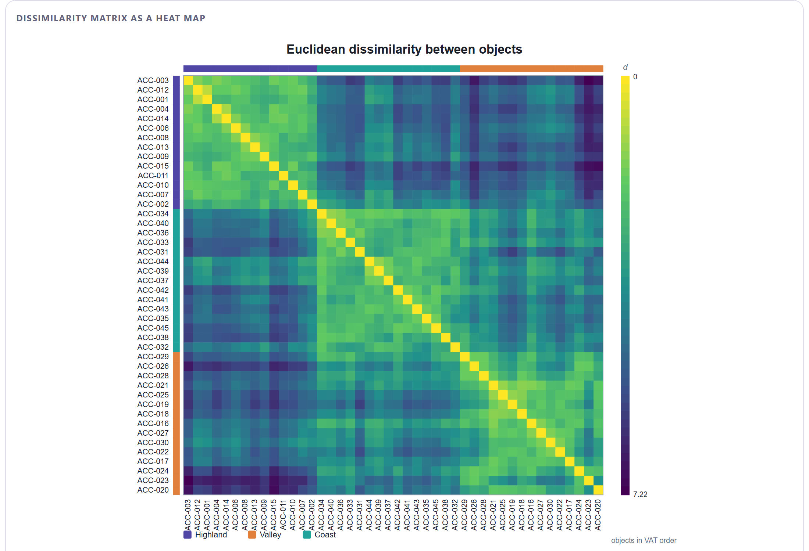
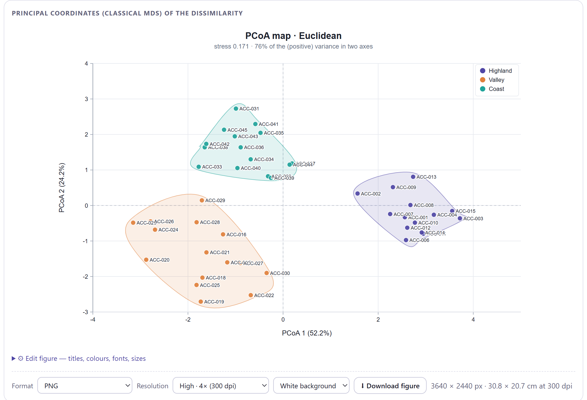
| Estrés | Lectura |
|---|---|
| < 0.10 | El mapa reproduce bien las distancias: puedes razonar sobre él. |
| 0.10–0.20 | Representación aceptable; lee los pares lejanos con cautela y confirma en el mapa de calor. |
| ≥ 0.20 | Mala representación en dos dimensiones: confía en la matriz (mapa de calor, tabla de vecinos, árbol), no en el mapa. |
El estrés se calcula después de reescalar linealmente las distancias del mapa, porque el PCoA clásico siempre las encoge un poco; así mide solo la deformación, no ese encogimiento inofensivo.
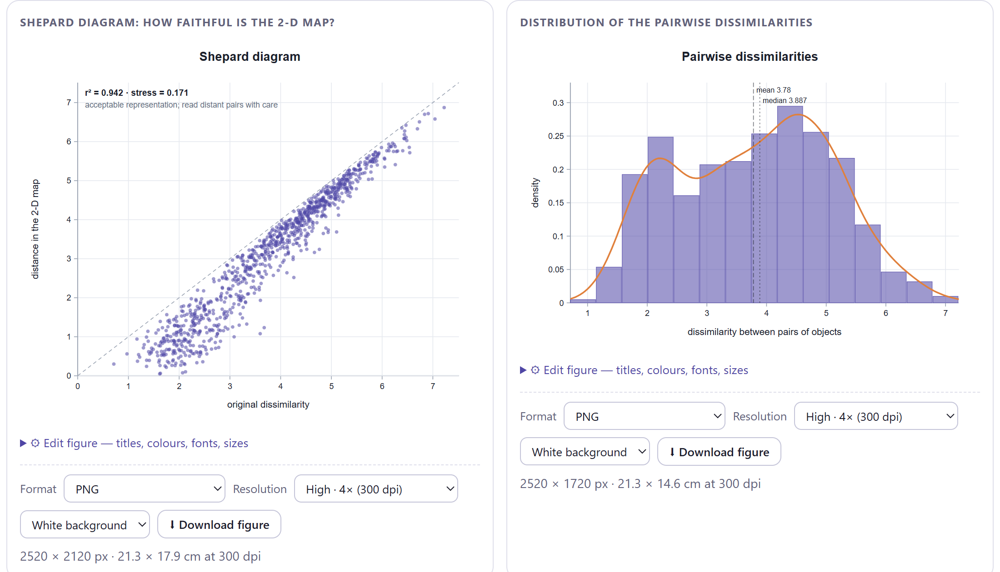
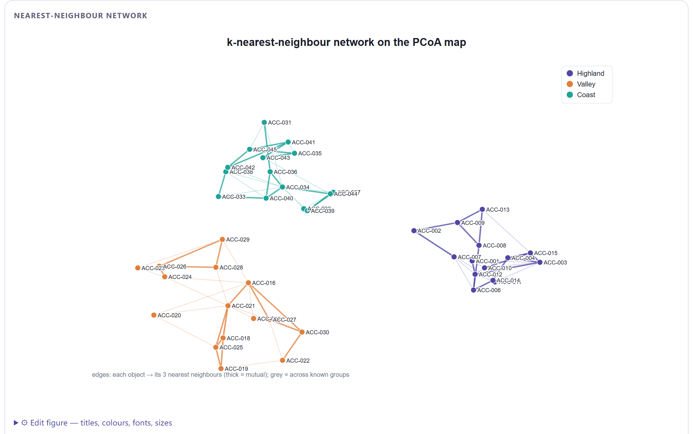
| Figura | Qué muestra | Controles propios |
|---|---|---|
| Dissimilarity matrix as a heat map | La matriz completa como imagen (figura 4.8). | Object order (VAT, orden del árbol UPGMA, por agrupación conocida, orden de la tabla), Colour map, Dark = similar, Show values (n ≤ 18), etiquetas, Known-group strips, paleta y leyenda. |
| Principal coordinates (classical MDS) | El mapa PCoA (figura 4.9). | Títulos y ejes, etiquetas y su tamaño, tamaño y forma de los puntos, Convex hulls per group, color sin grupos, paleta y leyenda. |
| Shepard diagram | Fidelidad del mapa (figura 4.10, izquierda). | Título, color de los puntos, paleta. |
| Distribution of the pairwise dissimilarities | Histograma y densidad de las disimilitudes (figura 4.10, derecha). | Título, Bins (0 = automático), color de barras y de la curva, paleta. |
| Nearest-neighbour network | Red de k vecinos sobre el PCoA (figura 4.11). | Título, Neighbours (k) de 1 a 10, etiquetas, tamaño de punto, color de las aristas entre grupos, paleta y leyenda. |
| Agreement between coefficients | Correlaciones entre coeficientes (figura 4.7). | Título, Use Spearman (rank) correlation, Colour map. |
⬇ Download the matrix (CSV) guarda la matriz completa con las etiquetas de los objetos en la primera fila y la primera columna, con seis decimales. Ese archivo puede volver a cargarse en el Bloque 2 como matriz de distancias, o llevarse a otro programa. El informe del Bloque 8 incluye las casillas, las comprobaciones, la tabla de vecinos y las figuras tal como las editaste.
Con cada ejemplo del Bloque 2 ya aplicado con sus valores propuestos, el Bloque 3 propone un coeficiente y marca de antemano unos candidatos para comparar. La tabla 4.8 resume lo que obtendrás; las prácticas siguientes se detienen en lo que enseña cada caso.
| Ejemplo | Coeficiente | Pares | Euclidiana (masa negativa) | Estrés | Entre / dentro | Comparación: r mínima |
|---|---|---|---|---|---|---|
| Razas de maíz | Euclidiana | 946 | sí (0 %) | 0.171 | 1.94 | 0.76 (Canberra vs Pearson): acuerdo moderado |
| Presencia de especies | Jaccard | 435 | casi (4.7 %) | 0.279 | 1.60 | 0.94 (Dice vs apareamiento simple): acuerdo estrecho |
| Abundancia de insectos | Bray–Curtis | 276 | casi (4.1 %) | 0.230 | 1.89 | 0.96 (Ružička vs Morisita–Horn): acuerdo estrecho |
| Perfiles de suelo | Gower | 630 | casi (5.1 %) | 0.129 | — | 0.98 (Gower vs euclidiana con indicadoras) |
| Matriz de distancias | Tal cual | 66 | casi (7.2 %) | 0.185 | — | 1.00 (tal cual vs raíz cuadrada) |
| Cuatro grupos simulados | Euclidiana | 3160 | sí (0 %) | 0.070 | 4.18 | 0.90 (euclidiana vs Canberra): acuerdo moderado |
| Ruido uniforme | Euclidiana | 1770 | sí (0 %) | 0.319 | — | 0.56 (euclidiana vs Canberra): desacuerdo sustancial |
Euclidiana y Manhattan casi no se distinguen (r = 0.98): con variables estandarizadas y sin atípicos, elegir entre ellas es cuestión de gusto. La distancia de correlación de Pearson es otra cosa: compara la forma del perfil de cada accesión (alta pero de mazorca corta, por ejemplo) e ignora su nivel general, y aun así separa mejor las regiones (cociente 2.62 frente a 1.94). Con solo ocho variables la correlación entre perfiles es ruidosa, así que la euclidiana sigue siendo la elección sensata; pero la comparación te dice que si un revisor pidiera "distancia de correlación", los grupos cambiarían solo en parte (r = 0.81 con la euclidiana).
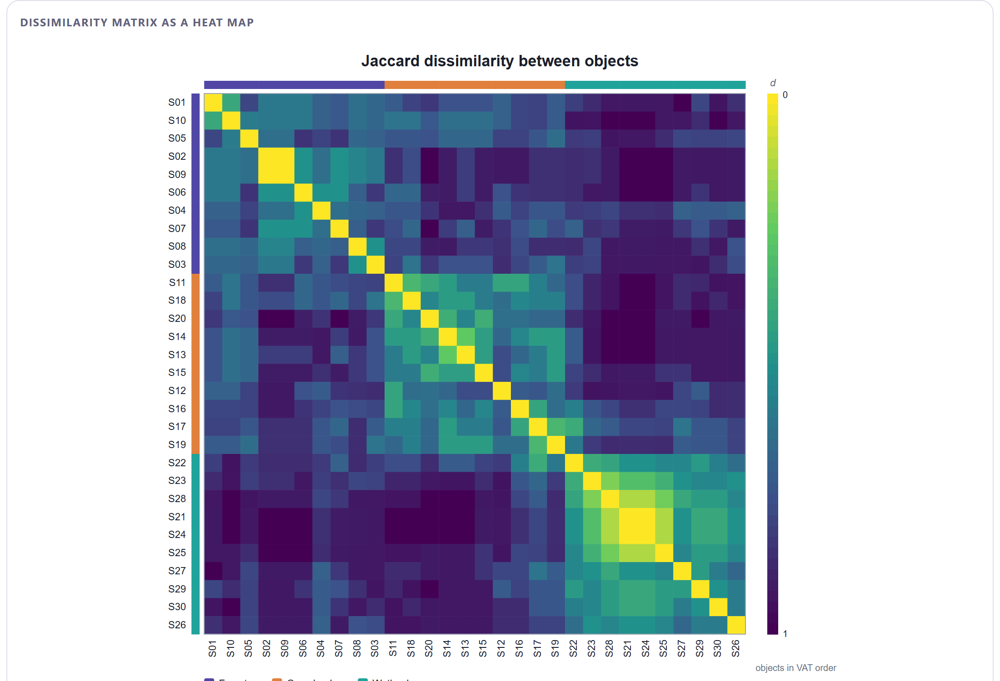
Que Jaccard y el apareamiento simple correlacionen 0.94 aquí no contradice la teoría del doble cero: esta tabla tiene 22 especies y pocas ausencias compartidas entre sitios de hábitats distintos. Con una tabla regional de 200 especies, donde cada sitio tiene 15, el apareamiento simple declararía parecidos a todos los sitios (comparten 170 ausencias) y la correlación caería. La regla sigue siendo: con presencia/ausencia de especies, asimétricos. Y el estrés alto (0.279) es normal con datos binarios: las disimilitudes toman pocos valores distintos y un plano no puede reproducirlas; lee el mapa de calor y, en el Bloque 4, el árbol.
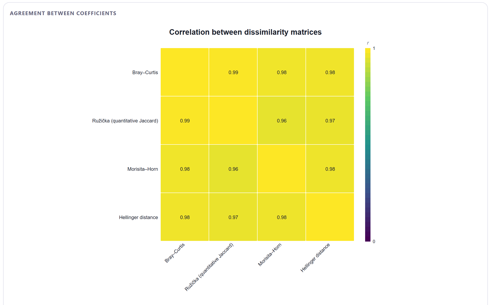
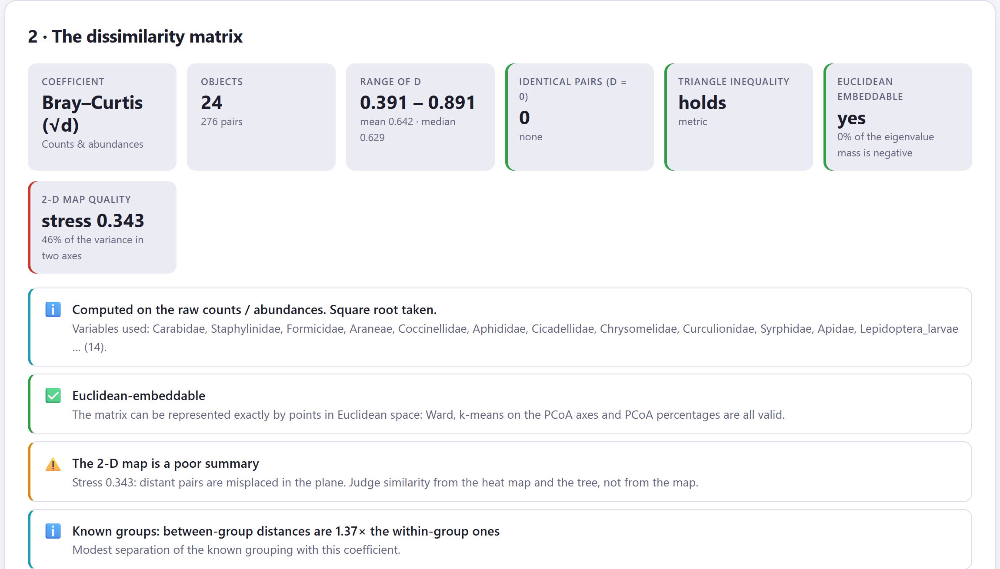
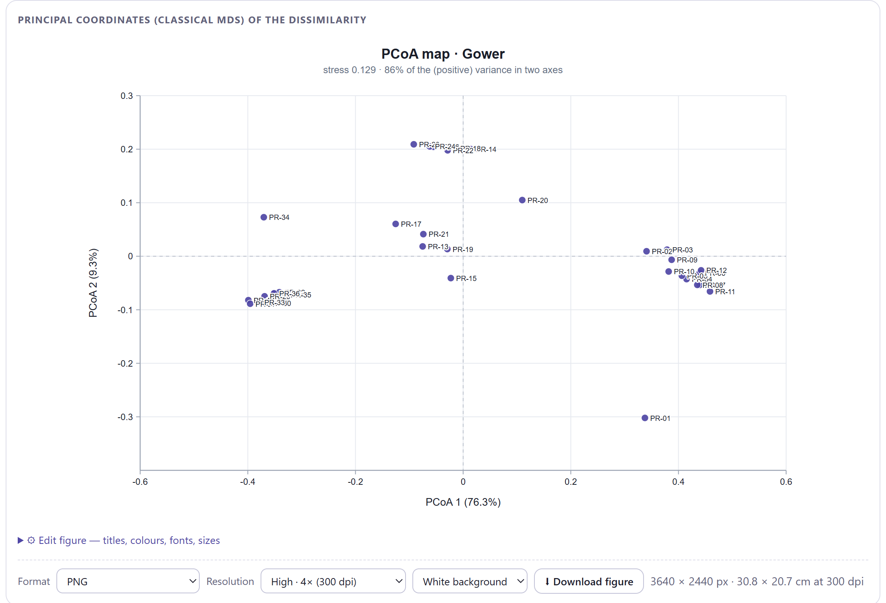
Pruébalo tú: abre Variable weights, pon Texture en 3 y calcula de nuevo. El estrés y las nubes cambian poco, pero la tabla de vecinos se reorganiza por texturas. Después prueba Binary variables = Symmetric: con una sola binaria (calcáreo sí/no) el efecto es pequeño, pero con una batería de marcadores ausentes en la mayoría de los perfiles sería grande.
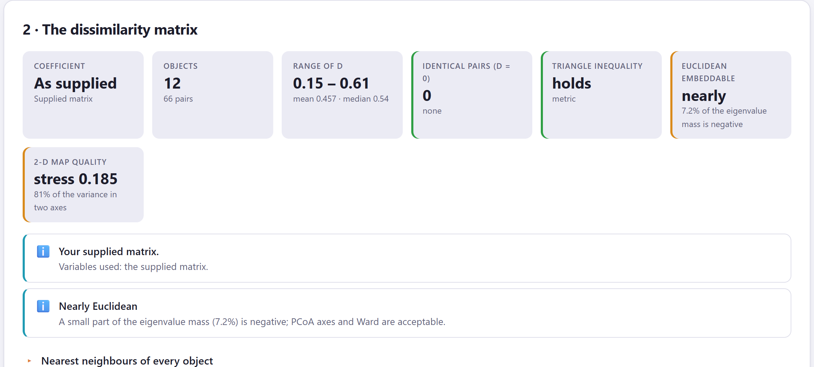
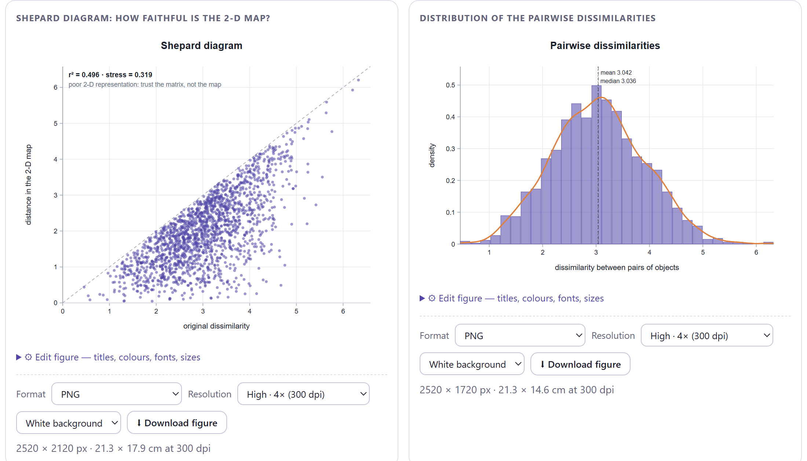
Con estructura real, los coeficientes razonables coinciden porque todos "ven" los mismos huecos entre grupos; el desacuerdo aparece en los detalles. Sin estructura, cada coeficiente ordena los pares a su manera y las matrices correlacionan poco: no hay nada que ver, y cada uno inventa algo distinto. Por eso una comparación con correlaciones bajas es, además de un aviso sobre la elección, una segunda señal (después del estadístico de Hopkins) de que quizá no hay grupos. La distribución de disimilitudes lo confirma: una sola joroba, todos los pares a distancias parecidas.
En la sección de métodos: el coeficiente (con su parámetro si lo tiene), sobre qué datos se calculó (matriz de trabajo estandarizada, conteos crudos, binarias declaradas), si es métrico y euclidiano, y, si comparaste, la correlación mínima entre candidatos. Una frase basta: "Se usó la distancia de Bray–Curtis sobre las abundancias crudas (métrica, casi euclidiana: 4.1 % de masa negativa); Ružička, Morisita–Horn y Hellinger produjeron matrices correlacionadas con ella por encima de 0.96". El párrafo automático del Bloque 8 la redacta con tus valores.
Con la matriz de disimilitudes calculada y diagnosticada, el siguiente capítulo construye con ella los árboles: las ocho reglas de enlace y el método divisivo, la correlación cofenética, cómo cortar el árbol, el estudio de dendrogramas con todas sus opciones de dibujo, el mapa de calor con árboles y la comparación de enlaces mediante tanglegramas.